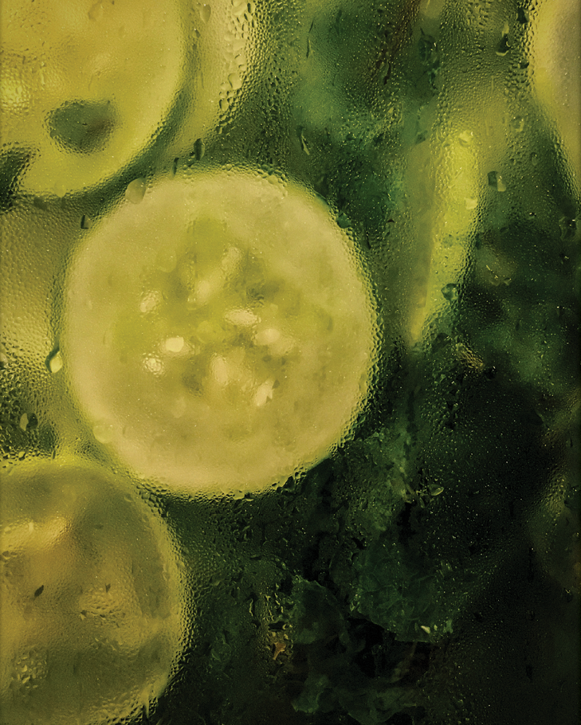
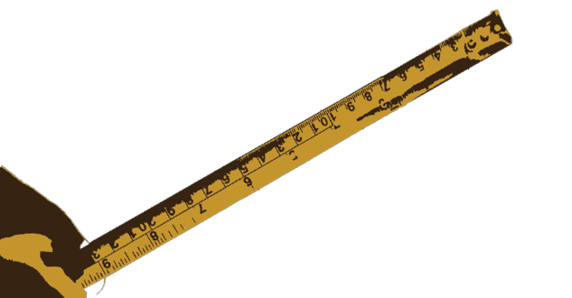

글 쓰는 게 오이 먹기보다 어려운 요즘입니다. 언젠가는 썩은 내가 진동하는 쓰레기 더미를 앞에 두고 메모 앱을 켰던 적도 있었습니다. 지나치는 담배연기에도 글감이 떠오르던 때는 지났지만, 다행인 것은 그렇게 아무 데서나 주워담은 문장들이 멋쩍은 간식거리라도 됐다는 사실입니다. 지금 쓰는 이 짤막한 문단은 모아두면 그럴싸하겠다 싶었던 그 부스러기들의 콜라주입니다. 적어도, 제 의도는 그랬습니다.
6

Inkyu Nathan Choe
PickledScenes
7
이 타래의 첫 끄트머리는 제가 스무 살이 되던 날에 걸쳐 있습니다. 청승 맞게도 도봉산 중턱에서 느껴지지도 않는 감상을 쥐어짜며 앉아있던 모습이 생각납니다. 아니, 정확히는 그렇게 내 10대의 마지막 해가 저무는 걸 보고만 있었습니다. 그렇게 맥없이 시작된 20대를 저는 이리저리 부딪혀가며 질질 끌다가도 내팽개치기도 했습니다. 이제 보여드릴 것들은 그때 생채기가 눌어붙은 피딱지이자 나이테입니다.
*
어릴적 내 방문 옆 벽은 삐뚤빼뚤 흑연으로 제멋대로 그인 검은 선들이 겹겹이 수놓곤 있었다. 시도 때도 없이 뒷통수를 바짝 붙이고 정수리 즈음에서 휘갈긴 흔적이었다. 어설픈 짝대기가 꼭대기 높은 빗금 너머 높은 곳에 그려진 날은 자는 내내 웃음지을 수 있을것만 같았다. 그렇게 새까매진 방문 옆을 나는 하루에도 몇 번이고 습관처럼 확인했다. 눈에 보이는 몇 센치 남짓의 성장이 유쾌했다. 지금에서야 생각건대, 내가 크는 중인 것을 확인하기에 그 좁은 공간 만큼 완벽한 기준도 없었던 것 같다. 언제나 제 자리를 지키고 있어서였을까. 적어도 집에서 방이 통째로 사라질 일은 없으니 말이다.
하지만 서랍장 한 켠 말아 넣어둔 때탄 줄자 같은 그 공간도 이사를 오며 사라졌다. 이삿날이 되어야 덧없게 느껴진 그 흔적질도 의미가 있던 것을 알았다. 그새 키가 다 커버린 나에게는 다시 일어나지 않을 동화 같은 일이 된 거다.
아득했다. 고개를 든 채 사다리를 밟아 내려가는 것 처럼 조바심이 났다. 잘 내려가고 있는 걸까.
잘 자라고 있는 걸까.
다시 산에 오른 것도 그런 잡념에 갉아먹히던 쯤이었다. 산행을 죽기보다 싫어한 내가 오르고 또 올랐다.자갈밭이 밑창을 닳아내고, 흙먼지 자욱이 바짓자락을 뒤덮으며 산은 내 위로 켜켜이 울퉁불퉁 선을 그어갔다. 들숨마다 폣속 가득 산내음 사이 잊고 지냈던 몇 센치 만치 무언가가 아른거렸다.
이제는 산을 즐긴다.

“
그새 키가 다 큰 나에게는 일어나지 않을 동화 같은 일이 돼버린 거다.
아득했다.
”